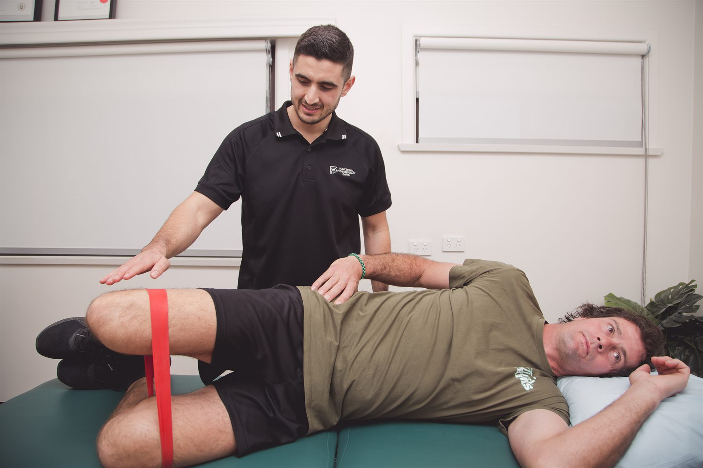

Injured at work? We treat injured workers from across Dapto and the Illawarra, helping you settle pain, rebuild capacity and get back to your job safely. For treatment covered by your claim, we bill your insurer directly with no out-of-pocket cost to you.
Physiotherapy for a work-related injury. NSW workers compensation can fund eligible treatment through your employer’s insurer.
NSW workers compensation can cover reasonably necessary physiotherapy for an eligible work-related injury. We check the claim details and treatment approval requirements before confirming how your appointment will be billed. That scheme is regulated by SIRA (the State Insurance Regulatory Authority) and administered by insurers such as icare and its scheme agents, or by a self-insured employer. Physiotherapy is one of the treatments it can fund, including rehabilitation matched to your work duties.
Your job shapes the rehabilitation: what you lift, how long you stand and what a full shift asks of you. Alongside treatment, we document progress, request approval where needed and communicate with your GP and case manager about your work capacity.
For treatment covered by your claim, no. We invoice your insurer directly, so there is nothing to pay at the desk and nothing to claim back later. If your claim has not been decided yet, insurers can begin provisional payments for reasonable treatment while liability is still being determined, which often means you can start physiotherapy without waiting for a final decision. Call us and we will tell you where you stand before you book.
Yes. You are not obliged to attend a clinic nominated by your employer or your insurer. Your physiotherapist does need to be approved to treat under the NSW scheme, and further treatment may need insurer approval, but the choice of practitioner is yours. If you would rather be treated close to home in Dapto than travel to a provider chosen for you, simply name us.
The main steps in a claim, from reporting the injury to planning suitable duties.
Tell your employer as soon as you can, and see your GP. They document the injury and issue a SIRA Certificate of Capacity setting out what you can and cannot safely do.
Your employer notifies their insurer. The insurer opens the claim, allocates a case manager and gives you a claim number.
Bring your claim number, insurer name and certificate to your first appointment. If you are still waiting for these details, call so we can check the payment arrangements before you attend.
Where approval is required, we send the insurer an Allied Health Treatment Request with your diagnosis, goals, proposed treatment and expected timeframe.
Approved sessions are invoiced directly at the SIRA-published rates. You pay nothing upfront and lodge nothing yourself.
We work with your GP, employer and case manager on suitable duties, then progress you toward your pre-injury role as your capacity rebuilds.
The Illawarra includes heavy industry at Port Kembla, warehousing and transport along the Princes Highway, construction around West Dapto, and aged care and disability support services. These jobs place different physical demands on workers, which matter when planning a return after injury.
Warehouse and industrial roles can involve repeated lifting, carrying and working around heavy equipment. Care workers may need to assist with transfers; tradespeople may spend hours kneeling or working overhead. Desk work brings different demands, including long periods at a computer. Tell us which tasks are difficult now and what suitable duties are available.
The exercises need to prepare you for those tasks. Getting a warehouse worker back to repeated 20 kg lifts from floor to shoulder height is a different program from getting a support worker back to safe two-person transfers, or a plasterer back to sustained overhead work. We build the program around the task you actually have to return to.

Allow about 45 minutes. Bring your claim details if available; call before attending if they are still being arranged.
Bring your claim number, your insurer’s name, your case manager’s contact details if you have them, and your Certificate of Capacity. If some of that is still in progress, call first. We will explain what information is missing and whether the appointment can be billed to the insurer. If cover is unavailable, we will explain any private fee before you decide to proceed.
We start by asking about the injury and, just as importantly, about your job: what you lift, how often, how long you stand, what your shift pattern looks like, and which parts of the role you cannot currently do. Then we examine you: movement, strength, joint and nerve testing as relevant. We discuss the findings and the first steps in treatment, which may include hands-on treatment, exercises or a medical referral.
It depends on the injury, how long you have had symptoms, and the demands of your role. A straightforward soft-tissue injury may settle in a few weeks; a significant back injury or a post-surgical case runs longer. We will discuss the likely recovery time after the assessment and review it as your symptoms and work capacity change.
We can review how you are managing those duties. Staying at work can be part of recovery when the tasks and hours are suitable. We discuss adjustments with your treating team as your capacity changes.
Read about spinal symptoms, dry needling and payment arrangements.
Hands-on treatment and targeted exercise for back pain, neck pain and sciatica.
Read moreServiceDry needling for selected muscle-related symptoms, used alongside physiotherapy and exercise.
Read moreFunding pathwayWhat an appointment costs, and every way it can be funded: private health, Medicare, WorkCover, NDIS.
Read moreBook a WorkCover appointment, or call to check what to do while your claim details are being arranged.